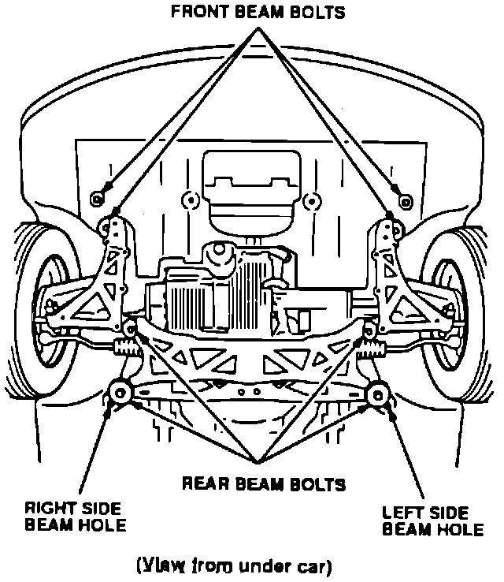
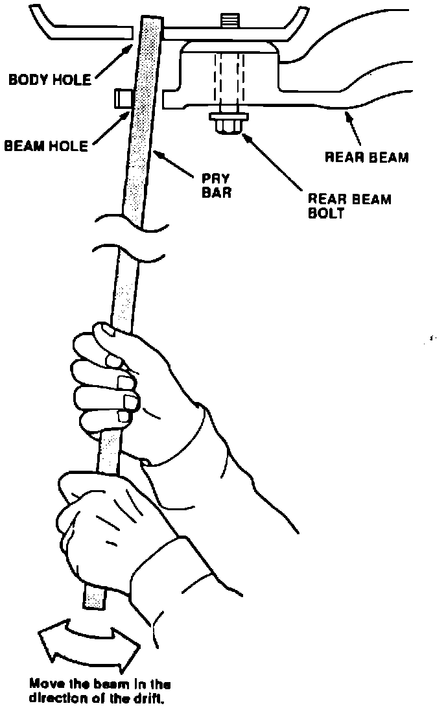
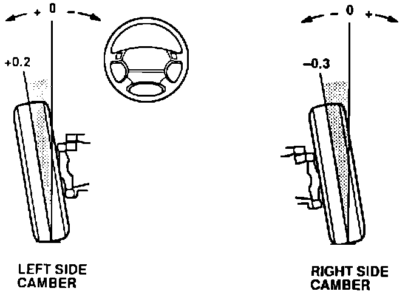
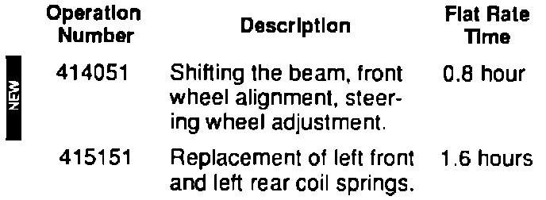

Alignment - Car Drifts To One Side
December 2, 1991BULLETIN NO.
91-047
YEAR
1991
MODEL
LEGEND
VIN APPLICATION
ALL
Car Drifts to One Side
(Supersedes 91-047, dated October 28, 1991)
SYMPTOM
Some Legend Coupes and Sedans may drift to one side while being driven at highway speeds.
PROBABLE CAUSE
A side-to-side difference in front camber greater than 0.4 degree (24 minutes) can cause the car to drift towards the side with more positive camber.
CORRECTIVE ACTION
Shift the rear beam to equalize the camber.
1. Raise the car on a lift with the wheels off the ground.

2. Loosen the 4 front beam bolts and the 4 rear beam bolts; do not remove them.

3. Insert pry bars through the holes in the rear beam and into the body holes.
4. With the help of an assistant, push both sides of the rear beam in the direction of vehicle drift to reduce the positive camber on that side.
5. Tighten the rear beam bolts while applying pressure with the pry bars.
6. Tighten both the front and rear beam bolts to 60 N-m (6.0 kg-m, 43 lb.ft.).
7. Check the front camber on an approved alignment rack. Refer to Service Bulletin 89-020 for minimum equipment specification. Measure the side-to-side difference, it should not exceed 0.4 degree (24 minutes).
If the side-to-side difference is within the 0.4 degree (24 minutes) limit, proceed to step 9.
If the car is drifting to the left, and the side-to-side measurement exceeds the 0.4 degree (24 minutes) limit, proceed to step 8.

EXAMPLE: If the left side measures at + 0.2 degree and the right side measures at -0.3, the side-to-side difference would be 0.5 degree.
8. Refer to section 18 of the service manual and remove the left front and left rear damper springs. Replace the springs with the parts listed in PARTS INFORMATION.
NOTE:
Refer to Service Bulletin 91-042 for damper spring compressor tool recommendations.
9. Check the steering wheel spoke angle. Refer to Service Bulletin 90-007 for information on steering angle adjustment.
PARTS INFORMATION
Left front spring: P/N 51401-SPO-A01
Left rear spring: P/N 52441-SPO-003
WARRANTY INFORMATION
In warranty: The normal warranty applies.

Out-of-warranty: Any repair performed after warranty expiration may be eligible for goodwill consideration by the District Service Manager. You must request consideration, and get the DSM's decision, before starting work.
Failed P/N: 50200-SPO-A00
Defect code: 049
Contention code: B04